乒乓球 → 中国
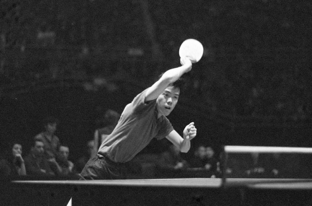
建国仅10年即在世界舞台获胜。乒乓球被正式确立为举国体制重点项目，开始与国家认同深度绑定。
最高层政治背书：毛泽东、刘少奇、周恩来、朱德亲自接见。触发国家级资源投入——业余体校选拔体系、省队-国家队金字塔形成。4万名职业运动员由政府全额资助全职训练。
国家宣传机器全面启动，容国团登上《人民画报》封面。全国各省市开始建设乒乓球训练设施。
北京英雄欢迎仪式。国家级媒体全覆盖。此后每一次世界大赛胜利都强化"乒乓球=中国"的认知模式。
"中国作为乒乓球大国的诞生之日"。全球乒乓格局从日本霸权永久转向中国。
在全国最困难时期仍投入建设体育场馆——政治资源和财政资源被优先分配给乒乓球，表明这项运动的国家战略地位高于民生。
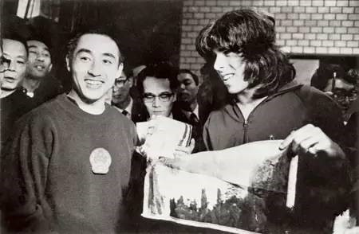
乒乓球从体育运动升维为地缘政治工具。尼克松："我从未想到中国方面的主动会以乒乓球队的形式出现。"
《时代》杂志标题："The Ping Heard Round the World"。10名记者随行。美国媒体连续报道整整一周——乒乓球成为全球新闻头条。
3亿人参与 ≈ 全国人口的21%。无需财富门槛，水泥球台免费且永久。物理性地嵌入了中国的城市景观。
2021年东京奥运：7500万人观看女单决赛直播。CCTV-5乒乓球转播年触达25.5亿人次(2018)。乒乓球是中国收视率最高的体育项目。
💼 商业化模式
乒乓球在中国主要由国家财政投入驱动，非商业自主运营。政府全额资助40,000名职业运动员的全职训练。国际赛事转播权和赞助收入存在，但规模远不如足球、篮球等职业体育。乒乓球的商业价值主要体现在：品牌代言（马龙等明星球员）、装备市场（红双喜等品牌）、赛事门票和转播权。核心模式是国家投资→国际荣誉→民族自豪感→持续支持的闭环。
- 国家意志是最强大的分发渠道：政府将乒乓球嵌入学校、军队、工厂的每个角落，并在城市景观中物理植入——这种系统性渗透是任何商业营销都无法复制的
- "创世神话"需要情感共鸣：容国团的冠军不只是体育胜利——它是一个刚建国10年的穷国在世界舞台上的"精神原子弹"，与国民情感深度共振
- 在政治价值层面达到顶峰：当乒乓球成为改变中美关系的外交工具时，它已不仅仅是运动——而是国家身份的一部分，这种地位几乎不可撼动
- 可及性是渗透的基础：水泥球台+两副球拍=几乎零成本的全民参与门槛。3亿人参与≈21%的人口覆盖
棒球 → 日本
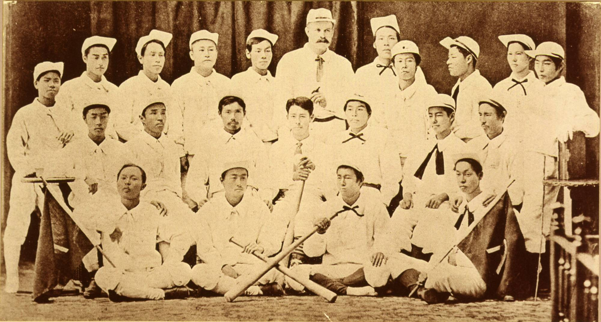
棒球从"外来好奇物"变成国民自豪感的载体。日语报纸称球员为"国家英雄"。证明了日本精神+纪律训练可以战胜西方人。
"引爆了全国的棒球热"。横滨商业高中、静冈高中等随即成立棒球社。棒球迅速在日本学校体系中扩散。
人才和学校资源涌入棒球：各学校纷纷组建棒球队并投入训练。外务省介入安排比赛。诗人正冈子规发表3篇棒球长文，赋予棒球知识分子正统性。
《朝日新闻》头版："我们的学生伟大胜利"。报道"从日本列岛的这一端传到那一端"。
甲子园将棒球与教育体系和青少年成长深度绑定。它不只是比赛——是成人礼、地域认同和准宗教式的情感体验。败者收集甲子园泥土的仪式（1949年至今）成为日本文化标志。
体系化的人才和资金投入：朝日新闻+每日新闻两大报社赞助。3,700所学校的年轻人体系化参与棒球→大学棒球→社会人棒球（丰田、本田等企业队）→NPB选秀——形成完整的人才金字塔。
现场：每日最多50,000名观众，夏季大赛约100万人次。每年8月形成全国性的"高中棒球热"，制造出一批批少年英雄。
NHK 73年连续转播每一局（1953年至今，约5,800+场比赛）。决赛600万+电视观众。47个都道府县各送一支代表队——全国每个地区都有"自己的队"。每年夏天制造全国性英雄。
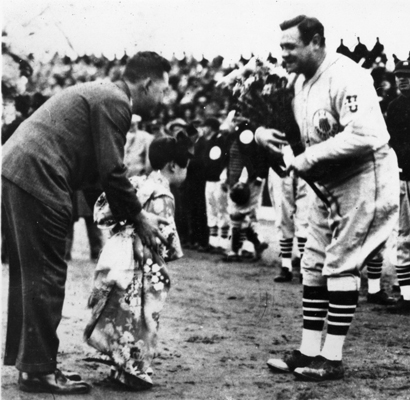
日本职业棒球由此诞生：正力松太郎将其作为报社发行策略，投入企业资源。此后读卖、阪神（铁路）、中日（报纸）、养乐多（饮料）、软银（科技）等12家企业争相投资球队——形成企业子公司模式。
由日本最大报纸读卖新闻主办。5000人在横滨码头迎接。球迷每次鲁斯挥棒时齐声高喊"Beibu Rusu!"
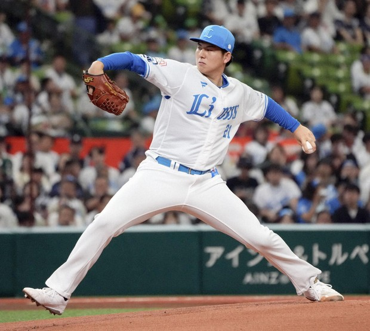
日本人在MLB的成功持续强化"棒球是日本能在最高水平全球竞技的运动"。NPB场均观众超过MLB——对于一个外来运动来说极为罕见。
💼 商业化模式：企业子公司模式
NPB的12支球队全部是大型企业的子公司，球队名称包含企业名（如"福冈软银鹰"、"东北乐天金鹰"）。多数球队并非独立盈利，而是作为母公司的广告载体运营。仅3支球队（读卖巨人、阪神虎、软银鹰）被认为持续盈利。母公司每年约补贴各队60亿日元(~4500万美元)。NPB全联盟年收入约800-1000亿日元，是全球第11大最富有的职业体育联赛，亚洲第一。
日本棒球的"文化翻译"——如何将外来运动变成自己的
| 维度 | 美国棒球 | 日本"野球道" |
|---|---|---|
| 哲学 | "Play ball"（玩球） | "野球道"——棒球之道，如同武士道 |
| 训练 | 适量，重视休息 | 极端："死の練習"——不吐血不算努力（飞田穂洲语）。训练时长3-4倍于美国 |
| 团队vs个人 | 重视个人数据和明星 | "和"（Wa）至上：牺牲触击频率2-3倍于美国，团队和谐高于个人英雄 |
| 年龄等级 | 能力至上 | 严格"前辈-后辈"等级：一年级负责清洁、搬运、整理 |
| 平局 | 不允许（加时赛继续） | 允许（12局后可平局结束）——不追求"你死我活" |
| 外观 | 个性化 | 高中生强制剃光头（2024年放宽）；败者收集甲子园泥土（1949年至今） |
- 文化翻译是核心密钥：日本没有"引进"棒球——而是将武士道精神注入其中。当接收文化能够将自己的价值观投射到外来产品上时，产品就变成了"他们的"
- 制度化比产品更重要：甲子园（1915年至今）比任何职业队都重要。它与教育体系、地域认同、成长仪式深度绑定，创造了有自身传统、情感节奏的周期性制度
- 企业子公司模式支撑了百年发展：虽然多数球队并非独立盈利，但12家大企业持续投入数十亿日元——棒球作为企业广告和品牌资产的价值远超直接利润
- 完整的人才金字塔：从少年棒球→高中甲子园→大学棒球→社会人棒球（企业队）→NPB选秀，系统性地将年轻人和企业资源引入棒球生态
- "创世神话"的力量：1896年击败美国人的故事至今被传颂——它证明日本人可以用纪律和精神超越西方，赋予了棒球永久的民族主义叙事
足球 → 巴西
粉碎了"足球是白人富人运动"的认知。为巴西足球确立了多种族、工人阶级的身份基因——这种身份此后再未改变。
打开了足球对所有种族和阶层的大门——极大扩展了人才库和球迷基础。足球从精英俱乐部运动变成全民运动。
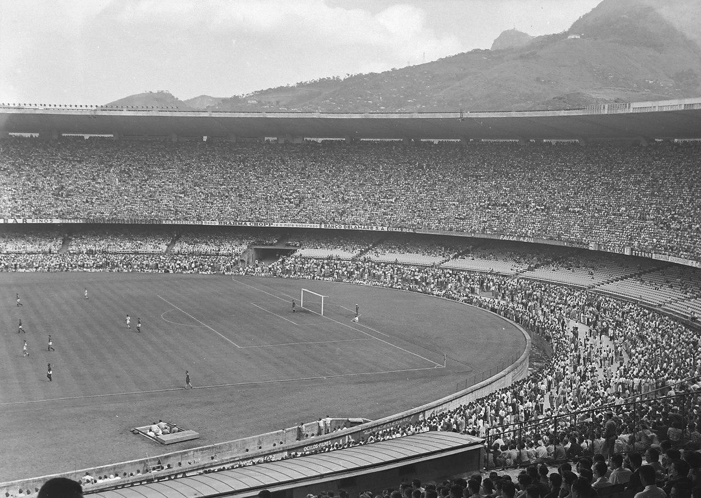
比赛经过：47分钟巴西率先进球，20万人欢呼。66分钟乌拉圭扳平。79分钟吉贾右路带球射门——门将巴尔博萨以为他会传中（因为之前一球就是这么进的），向另一侧移动——球从他和近门柱之间穿过。乌拉圭2:1逆转。
"绝对沉默"：终场前11分钟，20万人陷入近乎完全的沉默。巴西前锋阿德米尔回忆："当乌拉圭打进第二球时，满场鸦雀无声。"裁判吹响终场哨时无人欢呼、无人抗议——只有20万人呆若木鸡的沉默。吉贾后来说："只有三个人曾以一个手势让马拉卡纳的20万人沉默：弗兰克·辛纳屈拉、教皇约翰·保罗二世，还有我。"
169名观众需要救治：这些医疗事件并非暴力或踩踏导致，而是情感冲击造成的——晕厥、心脏病发作、歇斯底里。6人被送往医院，3人情况危急。据报道8人在比赛当天死亡（包括至少1人在家中收听广播时因震惊而亡）。
门将巴尔博萨被"替罪"50年：巴尔博萨虽被评为本届世界杯最佳门将，但作为非洲裔巴西人，他承担了不成比例的责难。他曾在火车上听到陌生人说"如果我遇到那个黑人，我不知道会对他做什么"。1963年他将进球门柱砍碎烧掉以试图"驱邪"。1994年他去国家队训练营探访球员，被拒绝入场——因为人们认为他会带来"坏运气"。他在马拉卡纳球场当了20多年游泳教练，晚年几乎赤贫。他最著名的话："在巴西刑法中，最高刑期是30年。但我已经为此付出了50年。" 关键事实：此后56年，直到2006年迪达上场，巴西再没有黑人门将首发世界杯。
创造了深刻的国家创伤。足球被证明事关民族最深层的情感——不只是运动，而是国家身份的投射。巴西更换了球衣颜色（白色→黄色，1953年通过全国设计大赛选出），以驱除记忆。
悖论：创伤反而加深了巴西与足球的关系。足球成为一种需要救赎的国家执念——这种执念驱动巴西在此后12年内三夺世界杯。
马拉卡纳球场（20万容量，当时世界最大）本身就是巨大的国家投资。创伤制造了"必须赢回世界杯"的政治压力，推动了对足球卓越的持续资源投入。
广播记者巴罗索赛后一度退休。报纸称之"巴西体育史上最悲惨的一天"。马拉卡纳惨案成为永久性的文化参照点——70多年后巴西人仍在谈论它。
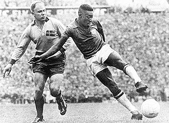
推翻了国际偏见。确立了"jogo bonito"作为巴西风格的神话——创造性、愉悦、攻击性的足球，既是对1950年创伤的回应，也是巴西国民身份的艺术表达。
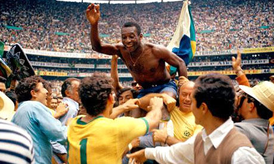
首次真正的全球电视足球观众——卫星技术首次覆盖亚洲和非洲。彩色画面创造了定义足球全球形象数十年的永恒影像。12年内3次夺冠——巴西="足球之国"的认知被全球确立。
💼 商业化模式
巴西足球的商业化由Globo电视台主导——转播权占俱乐部收入约40%。2024年TOP 30俱乐部总收入109亿雷亚尔(~18亿美元)，同比增长22%。但盈利性堪忧：TOP 20俱乐部2024年合计亏损超10亿雷亚尔，总负债21亿美元。2021年SAF法案允许俱乐部公司化改制，吸引外资进入（如博塔弗戈的John Textor、巴伊亚的城市足球集团）。巴西足球的核心收入模式是转播权+球员出口——依赖持续向欧洲出售人才。弗拉门戈2024年营收达2.12亿美元，是全美洲收入最高的俱乐部。
- 种族和阶级的民主化是深度嵌入的关键：足球从白人精英运动变成所有巴西人的运动，是因为瓦斯科等俱乐部打破了种族壁垒。当产品成为社会最重要议题（种族、阶级、国家身份）的竞技场时，它获得了永久地位
- 创伤和救赎创造了最牢不可破的纽带：1950年的惨败比任何胜利都更深地绑定了巴西与足球。失败→执念→救赎（1958/62/70三冠）的叙事弧是文化嵌入最强大的情感建筑
- "文化翻译"同样适用：巴西人没有简单复制英式足球，而是创造了"jogo bonito"——融入桑巴、卡波耶拉元素的美丽足球，让足球成为巴西文化身份的表达
- 低门槛是渗透的基础：一个球+任何空地=全民参与。7500万人踢球=世界最大的足球人口。从贫民窟到海滩，足球无处不在
- 商业化至今是结构性挑战：尽管收入创纪录，巴西俱乐部仍持续亏损——说明文化嵌入≠商业成功。MLBB需要同时关注文化嵌入和可持续的商业模式
电竞 → 韩国
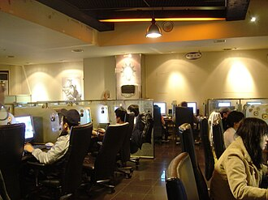
游戏从"小众爱好"变为合法的经济活动和社交命脉。PC房=韩国的酒吧+篮球场。1美元/小时=失业青年最便宜的娱乐和社交场所。
政府15亿美元宽带投资计划（始于1995年）被加速执行。失业工人转向PC房创业。到2001年韩国被评为全球宽带部署第一。
政府认可+电视转播+企业赞助=制度化正当性。"当一样东西有解说员和赞助商地出现在电视上时，它就是'真的'。"
BoxeR年收入超30万美元+9万美元代言——证明职业电竞是可行的职业。韩国空军甚至允许星际选手在服役期间组建战队继续比赛。
Faker的忠诚（拒绝高薪转会）和泪水（2017年）赋予他超越电竞的人格力量。到2020年，韩国媒体和网民将他与BTS、孙兴慜、奉俊昊、金妍儿并列为"五大国宝"。
象征性的重新分类：电竞正式脱去"游戏"标签，被国家认可为"体育"。青龙勋章、军役豁免、国家公墓资格——三重制度性认可。
ESPN将Faker列入"韩国精英四人组"（与奉俊昊、BTS、孙兴慜并列），称他们是"打破语言障碍、刻板印象和偏见的活传奇"。首尔建立"Faker神殿"成为旅游景点。
💼 商业化模式
韩国电竞市场2024年约3.21亿美元（全球第四），赞助占收入48%。Faker个人年薪约600万美元+300万+代言收入（耐克、红牛、宝马、三星等），估计净资产2500万美元+。政府2012年通过《电子竞技振兴法》，2024年政策融资1.74万亿韩元（3年前为5039亿）。商业模式已从纯赞助驱动向内容/流媒体+企业赞助+国际赛事多元化发展。
- 危机是变革的催化剂：1997年金融危机创造了独特条件——失业→便宜娱乐需求+创业动力→PC房爆发→星际争霸现象。没有这场危机，韩国电竞可能不会以这种速度和规模发展
- 政府的角色是"识别+制度化+放大"：政府没有"创造"电竞，而是在草根现象自然涌现后快速跟进——成立KeSPA、发放电视执照、通过法案。政府给予正当性，产业给出资金
- 英雄人物是文化嵌入的锚点：BoxeR→Faker的传承证明：个人英雄故事是将抽象的"产业"转化为有情感共鸣的"文化"的关键。Faker的忠诚、泪水、坚持比任何政策都更能打动人心
- 完整的生态系统，而非单一游戏：暴雪没有在韩国"制造"电竞——政府、电信、电视台、PC房老板和玩家共同完成。游戏是种子，土壤是由外部力量准备的
动漫/漫画 → 法国
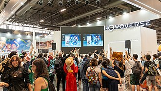
- 意外饱和 > 战略投放：55%收视率持续十年，因为动漫版权便宜且没人竞争。任何战略营销都达不到这种量级的持续曝光
- 世代塑造需要压倒性的内容量：每周26小时/假期40+小时的动画=整整一代人的默认娱乐。不是"推广"，是"浸泡"
- 文化受体的重要性：法国有"第九艺术"（bande dessinée）传统，视漫画为严肃艺术。日本漫画只需证明自己也是"艺术"，就能进入这个预设的文化框架
- 反对势力反而强化了嵌入：罗雅尔的攻击没有消灭动漫——反而将分散的观众凝聚成有身份认同的粉丝社群
- 等待世代更替：80-90年代的动漫孩子成为2010-20年代的文化守门人。"文化通行证"实验证明这种偏好是真实且深刻的
LINE → 泰国
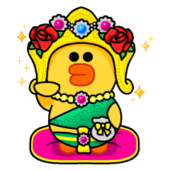
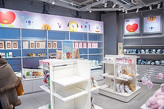
💼 商业数据
- 深度本地化需要独立的本地团队：LINE设立泰国子公司+全本地C-suite+本地化产品策略。WhatsApp的全球统一策略在泰国完全失败（仅1200万用户 vs LINE的5600万）
- 文化"臣服"而非文化输出：LINE没有向泰国输出日韩文化——而是成为泰国文化的平台（泰国贴纸、泰国彩票、佛教供奉服务）
- 超级应用策略创造不可逾越的切换成本：切换LINE=同时换掉通讯、政府服务、外卖、支付、银行、新闻——这种生态锁定是最快速的文化嵌入路径
- 用户创作者经济加深归属感：48万泰国贴纸创作者=LINE不只是平台，更是泰国人的创作空间和收入来源
宝可梦 → 全球
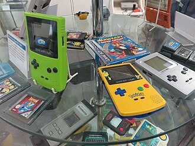
游戏+动画互相驱动：动画创造大众认知和情感联结，游戏提供沉浸体验和社交机制，卡牌/玩具/电影进一步放大。1999年11月达到巅峰："宝可梦狂热"（Pokémania）——TIME杂志将宝可梦放上封面（史上首个电子游戏获此待遇）。电影首映票房1.72亿美元。卡牌印刷耗尽了美国大部分印刷产能。汉堡王联名活动是快餐史上最大之一。4Kids因宝可梦收入暴增30倍，被Fortune评为"美国增长最快的公司"。
宝可梦帝国：收入构成（累计~1500亿美元）
- 游戏+动画是互相驱动的双引擎：日本靠口碑(游戏社交机制驱动)，美国靠"先动画后游戏"(媒体策略)。不同市场不同策略，但核心是游戏和动画互相放大
- 生态系统碾压单一产品：游戏只占1500亿美元中的~200亿。授权商品（~1000亿）才是真正的收入引擎。宝可梦不是游戏公司——它是商品授权帝国
- 世代更新引擎：每3-4年新一代+~100个新角色——每代孩子都有"自己的"宝可梦。这种持续更新防止了IP老化
- 怀旧是战略资产：Pokémon GO证明世代依附可在20年后重新激活——宝可梦最大的文化时刻（GO的2.32亿月活）来自发行20年之后
K-pop → 东南亚
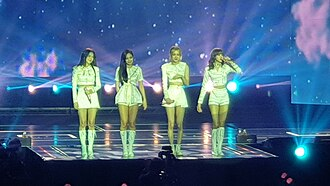
- 本地代表创造归属感：Lisa为K-pop在东南亚做的贡献超过任何营销活动。来自目标文化的角色/创作者让产品从"他们的"变成"我们的"
- 建设粉丝基础设施，然后让粉丝拥有它：官方粉丝团有名称、颜色和仪式——创造身份基础设施后，粉丝将其重新用于自己的目标
- 国家级战略可以系统性地推进文化出口：政策支持+产业投资+教育推广（世宗学院）——文化出口不是自然发生的，可以被设计和加速
- 超越产品的粉丝社群=真正的嵌入标志：当K-pop粉丝组织能力被用于政治动员时，说明这种文化已经渗透到社会基础设施层面
综合分析
文化嵌入速度对比
驱动因素雷达图
七大通用原则
结构性时机 —— 乘浪而行
每个案例都在结构性变革时刻成功：经济危机(电竞/韩国)、政治革命(乒乓/中国)、现代化(棒球/日本)、技术变迁(LINE/智能手机、宝可梦/Game Boy、K-pop/YouTube)。没有一个案例在"平常时期"完成文化嵌入。
可及性 —— 门槛越低，渗透越深
最深度嵌入的案例都有最低准入门槛：水泥桌+球拍、任何球+空地、1美元/小时PC房、免费APP+电视+YouTube。高门槛产品可以有忠实粉丝，但难以成为"全民文化"。
文化翻译 —— 让他们把它变成自己的
最强嵌入发生在接收文化重新发明产品时：武士道+棒球=野球道、桑巴+足球=美丽足球、泰国贴纸+LINE=泰国平台。单纯的"引进"远不如"翻译"。
建制度，不只建产品
甲子园(1915)比任何棒球队都重要。KeSPA给电竞正当性。Japan Expo给法国动漫永久性。建造有传统、情感节奏的周期性仪式——这些仪式的力量远超产品本身。
本地代表创造归属感
Lisa让K-pop对泰国人是"我们的"。贝利让足球对黑人巴西人是"我们的"。48万泰国贴纸创作者让LINE对泰国人是"我们的"。没有本地面孔和本地创作者，外来产品永远是"他们的"。
生态系统 > 产品
宝可梦=游戏+动画+卡牌+玩具+电影。K-pop=音乐+剧集+时尚+语言。LINE=通讯+外卖+支付+政务。单一产品无法独立成为文化符号——需要多触点的生态系统。
国民身份绑定 vs 文化归属
乒乓=中国荣耀、棒球=日本精神、足球=巴西灵魂。当产品与国民身份绑定时几乎不可撼动——但这对游戏/文娱产品难以直接复制。替代路径是"文化翻译"(LINE的泰国化)和"本地英雄"(Lisa)：不追求成为"国家骄傲"，而是成为"我们文化的一部分"。LINE不代表泰国的荣誉，但它已是泰国人日常生活不可分割的一部分——这是游戏和文娱产品更现实的目标。
每个文化符号的"创世神话"
每项成为文化符号的事物都有一个被反复传颂的标志性"起源故事"。这些故事的共同特征：弱者逆袭、情感共振、简洁有力。
乒乓球：1959年容国团夺冠
"建国仅10年的穷国打败了世界"——精神原子弹。国家领导人将其列为年度两大喜事之一。简洁、有力、与国家命运绑定。
棒球：1896年一高击败美国人
"武士后裔用美国人的运动以29-4的比分击败美国人"——民族尊严的证明。这个故事赋予了棒球永久的民族主义叙事，至今在日本被传颂。
足球：1950年马拉卡纳惨案 + 1958年贝利救赎
足球有双重神话——"创伤+救赎"。先有20万人的沉默，再有17岁少年的"新的尊严"。这种叙事弧线比单纯的胜利更加深刻。
电竞：金融危机中的PC房/星际争霸
"国家崩溃时，失业工人在网吧里打出了新产业"——危机中的创造力。不是计划的产物，而是绝望中的意外收获。
动漫：1978年Goldorak首播 / Club Dorothée
"一个暑期填充节目让竞争频道收视归零"——意外的征服。不是精心策划的入侵，而是廉价内容偶然间塑造了整整一代人。
LINE：贴纸文化+政府入驻
LINE的创世神话不是单一事件，而是渐进的"不可替代化"——从聊天到支付到政府服务，直到你发现离开它等于同时换掉电话、银行和电视。
宝可梦：1999年TIME封面/宝可梦狂热
"一个过时掌机上的游戏，纯靠孩子之间的口口相传，最终耗尽了美国所有的卡牌印刷产能"——草根力量的终极演绎。
K-pop/东南亚：Lisa的崛起
"一个泰国女孩成为全球K-pop巨星，在MV中穿泰国服饰跳泰国舞"——"我们的人在他们的舞台"。Lisa将K-pop从消费变成了归属。
总览对比表
| 维度 | 乒乓/中国 | 棒球/日本 | 足球/巴西 | 电竞/韩国 | 动漫/法国 | LINE/泰国 | 宝可梦/全球 | K-pop/东南亚 |
|---|---|---|---|---|---|---|---|---|
| 核心驱动力 | 国家意志 | 文化翻译+制度化 | 草根民主化 | 危机+政府+产业 | 意外电视饱和 | 本地化+超级应用 | 多媒体生态 | 国家战略+粉丝 |
| 商业模式 | 国家财政 | 企业子公司 | 转播权+球员出口 | 赞助+内容 | 出版市场 | 超级应用生态 | 商品授权帝国 | 音乐+代言+演出 |
| 创世神话 | 1959年夺冠 | 1896年击败美国人 | 1950创伤+1958救赎 | PC房/星际争霸 | Goldorak首播 | 渐进不可替代化 | 宝可梦狂热 | Lisa的崛起 |
| 可盈利性 | 否（国家投入） | 部分（3/12盈利） | 否（持续亏损） | 中等 | 是（出版业） | 是（超级应用） | 是（商品+游戏） | 是（产业化运作） |
| 政府角色 | 主要推动者 | 早期辅助 | 中等 | 主要加速器 | 先敌后友 | 采纳者 | 最小 | 主要战略家 |
- 文化嵌入最快的路径是生态系统锁定（LINE 13年）和政府+产业协同（电竞/K-pop 15-25年）
- 最深度的嵌入需要文化翻译（棒球/日本、足球/巴西）或世代浸泡（动漫/法国）——至少需要一代人（20-30年）
- 国民身份绑定是最强文化嵌入——但游戏/文娱产品更适合通过"本地化翻译"和"本地英雄"实现"文化归属"
- 所有案例都有"创世神话"——一个被反复传颂的标志性起源故事。MLBB需要识别或创造这样的故事